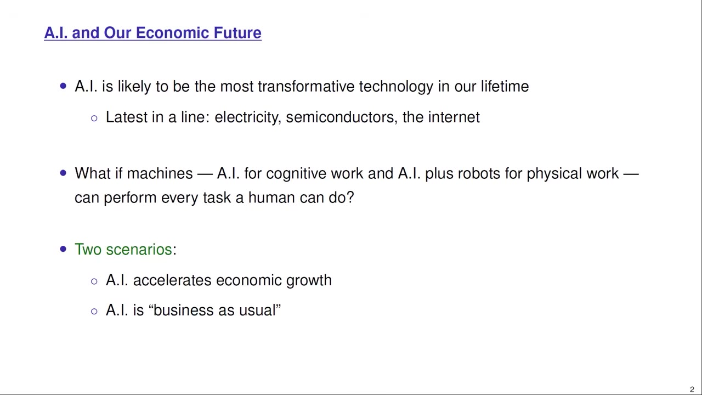
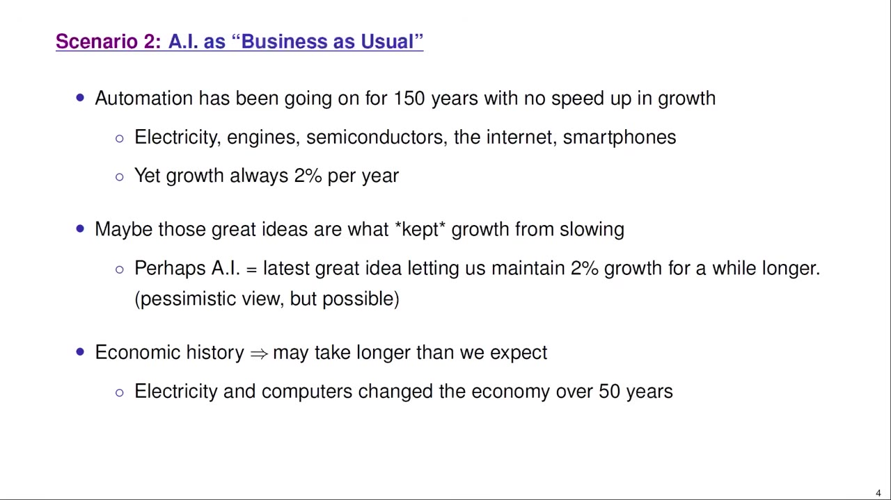
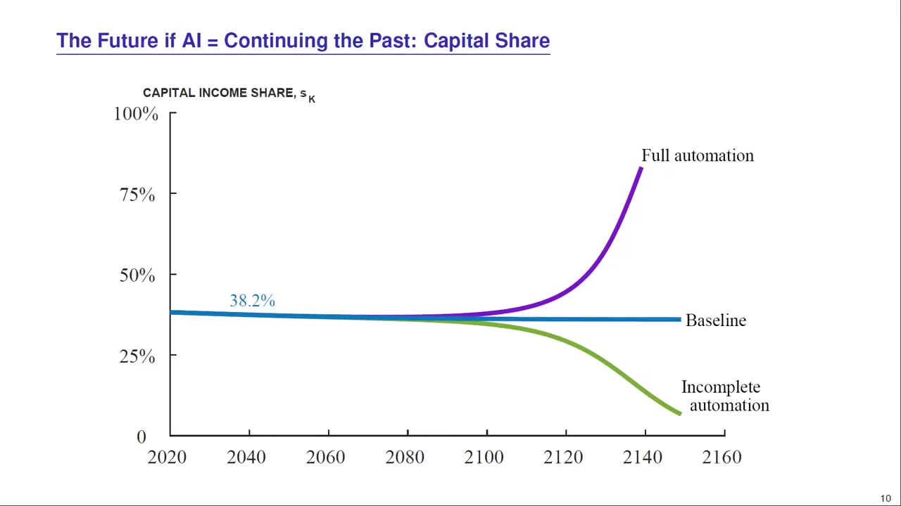
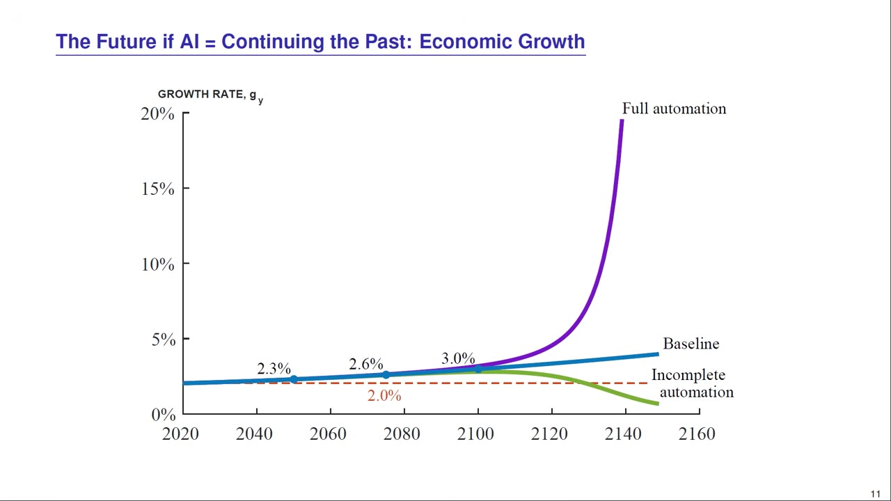
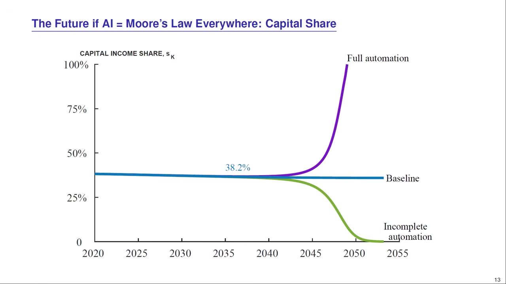
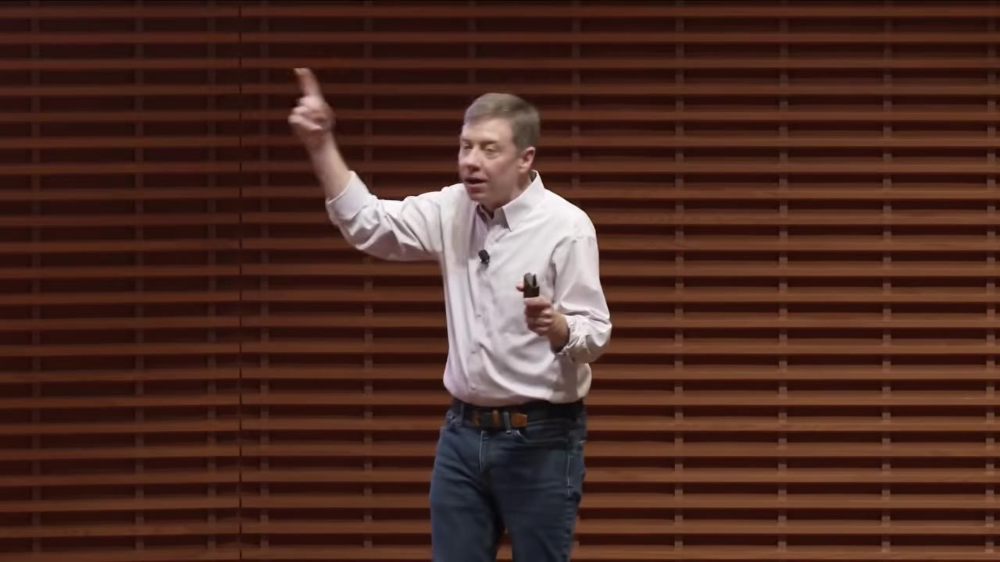
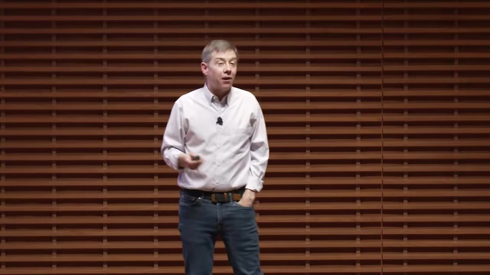
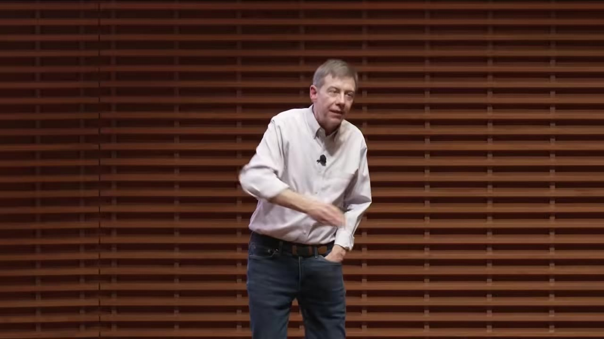

AI and Our Economic Future: Why Growth Explodes — But Slowly
Stanford growth economist Chad Jones takes the two loudest stories about AI — Silicon Valley's "growth explodes" and the skeptics' "it's just another normal technology" — and runs them through real growth models. His unifying idea is "weak links," and it leads somewhere surprising: growth probably does explode, but far more slowly than the hype, while the downside risks arrive sooner.
Creator: Chad JonesRuntime: 60 minVideo published: May 21, 2026145.8K views when summarized
Jones weighs two extremes: Silicon Valley's FOOM (AI automates everything and growth explodes) vs business-as-usual (AI is just the next normal technology, like electricity, and 2% growth continues).
His unifying framework is weak links: a chain is only as strong as its weakest link, so automating most tasks barely helps — there's always a new bottleneck. You carry 100 million times the transistors of the 1970s, yet you aren't 100 million times more productive.
His models say growth does eventually explode — but slowly. Even an aggressive 'Moore's Law everywhere' scenario takes ~30 years, not the 3–5 the AI-2027 crowd predicts.
On jobs: roles are bundles of tasks, so automating 75% of them can raise wages (there are more radiologists now, better paid, post-AI) — though some jobs go, and it all takes longer than headlines claim.
He's genuinely worried about catastrophic risk: weak-link systems improve slowly but are fragile on the downside — a bad actor with a jailbroken model hacking the grid or designing a pathogen is, he thinks, plausible within ~3 years.
01 · Two scenarios
FOOM vs. business as usual
Jones frames the debate as two caricatured extremes. Scenario 1 (FOOM): AI automates software, then AI research, then becomes "a country of geniuses in a data center," then runs robots — and in the growth models he teaches, automating both cognitive and physical work makes growth explode. Scenario 2: AI is just the latest normal technology, like electricity or the internet.

Chad Jones, whose 15+ years of research is on economic growth, laying out the two extremes — neither of which is likely exactly right.00:02:00
02 · The 150-year puzzle
Transformative tech, yet always 2%
US living standards have grown ~2% a year for 150 years — a near-straight line on a log scale — through electricity, cars, antibiotics, semiconductors, and the internet. How can technologies be wildly transformative yet growth never accelerate?

The "business as usual" case: within any technology class, ideas get harder to find — each new technology mostly kept 2% growth from slowing, rather than accelerating it.00:06:49
The historian's cautionThese transitions take decades — going from steam to electric motors meant physically reorganizing the factory. The pessimistic read: maybe AI is just the next great idea that lets 2% growth run another 50 years.
03 · Weak links
A chain is only as strong as its weakest link
This is the heart of the talk. Business success requires completing many tasks; make 17 of 20 chain links super strong and the chain is still only as strong as the remaining weak ones. The Challenger exploded over a $25 O-ring.
The illustration he keeps returning to: you have ~100 million times the transistors in your pocket as the 1970s equivalent — and you're maybe 2–3x more productive, not 100 million times. The weak links bottleneck you.00:16:34
Weak links are the source of scarcity… What is the scarce factor? What is the weak link? is a question we should always be asking.— Chad Jones
A telling data point: computers are everywhere, yet their share of GDP fell from ~4.5% (2000) to ~3% — they got so plentiful and cheap that humans, being scarce, capture more. Exactly what a weak-link model predicts.
04 · The model
Infinite software would make us… 2% richer
Jones builds a model where ideas drive growth (Romer), production has weak links, and automation chips away at them over time. A clean thought experiment: if you had infinite software, how much richer would you be?

Calibrated to US data and run forward: three scenarios for capital's share of income — full automation (capital → 100%), a human-reserved slice (labor → 100%), and a stable baseline.00:23:15
The elegant resultBecause of weak links, infinite amounts of one task raises GDP by that task's share of GDP. Software is ~2% of GDP — so infinite software makes us only ~2% richer. Automating one thing brilliantly isn't enough; you have to keep automating the weak links.
05 · What the simulations show
Growth explodes — but agonizingly slowly
Run the model forward and growth does eventually take off as the flywheel (automation → ideas → more automation) wins. But weak links throttle it for a long time.

Full automation (purple) explodes to infinity; the baseline creeps 2.0 → 2.3 → 2.6 → 3.0% — look at the axis: that's over centuries. By 2050 we'd be ~4% richer; by 2075, ~15%.00:25:55
All the scenarios I run say growth explodes over the next 50 or 100 years… but the explosion is not nearly as fast as you would have thought when I said the word 'explosion.'— Chad Jones
06 · The aggressive case
Even "Moore's Law everywhere" takes 30 years
To steelman Silicon Valley, Jones runs a deliberately aggressive calibration: the entire economy starts improving 10% a year, like Moore's Law, today.

Now growth really moves — past 25%/year by 2050, ~50% richer by 2030. And yet the explosion still isn't "complete" until ~2060. Even here, it takes ~30 years, not the 3–5 of AI 2027. Why? Weak links again.00:28:25
07 · Jobs
Automating 75% of your tasks can *raise* your wage
In 2016 Geoff Hinton said to stop training radiologists. Instead there are more radiologists today, paid more. Jones's lens: jobs are bundles of tasks; automate most of them and the remaining tasks become the scarce, high-return weak links.

The flip side: some jobs do go (Uber drivers, eventually, to Waymo) — but even self-driving took 20+ years from the 2004 DARPA challenge. Things take longer than the headlines say.00:31:00
08 · Inequality & meaning
Abundance, and what we'll do all day
A world where AI changes everything is a world of enormous GDP — abundance, with plenty to redistribute (keep current US programs and the bottom 10%'s consumption rises). Notably, AI is hitting cognitive/creative work first — so the electrician's wage may rise while the economist's doesn't, which could narrow inequality short-term.

On meaning: when his own growth models get written better by AI, Jones reaches for the retirement analogy — pottery, songs, "getting together with my growth friends and having the AI teach us the latest growth model."00:34:00
09 · The risk he can't shake
Slow to improve, fragile on the downside
Jones is not a pure optimist — he's "very nervous." Weak links cut both ways: benefits come slowly (you must strengthen every link), but one broken link destroys the value — and the catastrophic risks arrive sooner than the upside.

Two flavors of catastrophe: a bad actor with a jailbroken model, and "alien intelligence." Anthropic's "Mythos" already found thousands of bugs in 25-year-old software no human caught.00:40:48
How do we retain power over entities more powerful than us forever?— Chad Jones (citing Stuart Russell)
His close: AI is worth "multiple internets," more transformative than anything we've seen — it'll just take ~30 years, not five. Use the intervening time to prepare for the labor, inequality, and catastrophic risks. (And, only half-joking: "I'll be automated in two years. You guys are safe for another 15 — own shares of the S&P 500.")